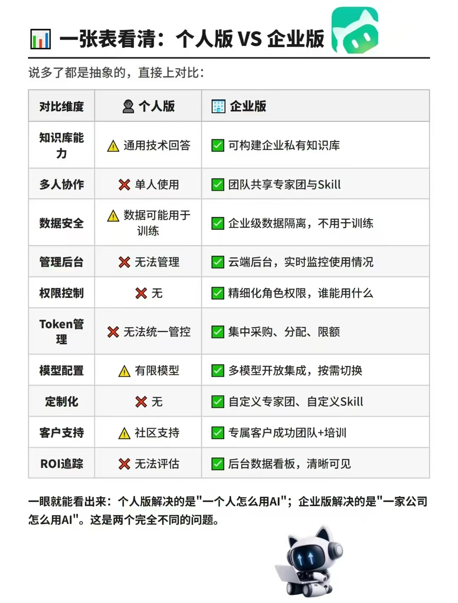

从下载安装到后台管理，新客户最常问的问题都在这里
v0.10.0 · 2026-10-20可以。Mac 和 Windows 都支持，下载安装方式一致，到官网下载对应版本安装即可。
待补充：支持的 macOS / Windows 最低系统版本要求
官网首页即可下载：https://www.workbuddy.cn/
待补充：下载入口截图 / 具体点击路径
看你的使用场景：
不需要。直接沿用已注册的账号即可。
先完成账号实名认证。
未实名认证的账号在后续购买、企业协作等环节会受限，建议注册后第一时间完成。
待补充：实名认证的具体操作路径 + 截图
个人版不支持多人共用。
个人版账号与一个微信或手机号绑定，登录身份是唯一的，无法用于企业协作。如果确实需要多人使用，请看 Q7。
升级企业版。企业版可以在企业账户内统一管理成员，并按需分配席位；人员变动时，席位可以在账户内重新分配，不需要重新购买。
买完之后怎么把席位分给同事，见 Q13。
核心区别在协作能力：
| 个人版 | 企业版 | |
|---|---|---|
| 登录方式 | 一个微信 / 手机号 | 企业账户统一管理 |
| 多人协作 | 不支持 | 支持 |
| 席位管理 | 无 | 可在账户内分配、调整 |
| 用量管理 | 无 | 可查看 / 分配成员用量 |
| 适合场景 | 个人先上手、熟悉功能 | 团队共同使用 |
📊 一图看懂：

点击图片可放大查看。看不清可保存到本地。
待补充：企业版功能清单、可添加的成员数量、其他企业专属能力
完全可以，也建议这样做。
先下载个人版客户端用几天，把基本操作摸熟、确认确实能解决你的问题，再考虑是否升级企业版。手感是试出来的，别人讲再多不如自己上手跑一遍。
企业版走的是腾讯云渠道，流程上是先确认能否关联，再关联，最后下单：
关联邀请链接（点击打开，或点右侧按钮复制）：
自己去腾讯云后台通常找不到对应的自购入口，所以下单前先联系我们核验企业名称和账号关联资格，避免账号不符合关联条件，影响后续购买。
待补充：关联操作的具体步骤截图
腾讯云官方下单页：
https://cloud.tencent.com/product/workbuddy-enterprise?Is=sdk-topnav
备用入口：https://copilot.tencent.com/pricing/
可以买多个。按需购买，买完再分配给团队成员即可（1 人起购）。
待补充：单个腾讯云账号可购买的数量上限
在管理后台的成员管理里点「添加成员」，填写成员信息即可（会跳转到腾讯统一身份平台）。
详细配置指引：https://www.codebuddy.cn/docs/ide/Codebuddy-enterprise-edition/Codebuddy-enterprise-purchase
待补充：成员添加界面的截图
目前企业版价格为 198 元 / 账号 / 月，发票可以在腾讯云后台自行开具。
待补充：是否有年付优惠 / 多席位折扣
登录地址（复制粘贴到浏览器打开）：
用购买时填写的超级管理员手机号登录，登录成功后会直接进入管理后台（copilot.tencent.com/admin/overview）。
在后台里可以做这些事：添加 / 管理成员、查看和调整用量、扩容许可证、续费。
添加成员后，该账号处于未激活状态，需要同事本人完成一次激活：
每个企业成员默认有 2000 积分的配额，用完会无法继续使用，需要管理员调整。
待补充：积分的具体消耗规则（一次对话消耗多少）
没有买错，不冲突。
同一个账号在 WorkBuddy 和 CodeBuddy 里都能使用，后台界面上出现 CodeBuddy 的字样是正常的，不影响你使用企业版的功能。
待补充：乐享知识库的定位与是否单独付费
官方有一份常见问题文档，安装登录、模型配置、Bot 连接、日志排查、账户与退款这类问题，可以先在里面查：
直接联系我们的对接人：
不管是关联、下单、分配席位还是后台操作，任何环节卡住了都可以直接问他。
能。手机端有 iOS / Android / 鸿蒙 App 和 微信小程序 两个入口，支持两种模式：
| 模式 | 需要电脑吗 | 适合什么 |
|---|---|---|
| 云上模式 | 不需要 | 查资料、写文案、处理你上传的照片和文件 |
| 本机模式 | 需要，电脑保持运行 | 读写电脑里的文件、执行本地任务 |
不能像电脑那样自由浏览手机文件夹。只能把文件主动交给它，它不能自己去翻。
点输入框旁边的「+」，有四个入口：
| 入口 | 能做什么 | 限制 |
|---|---|---|
| 拍照 | 实时拍摄纸质文件、发票、白板 | 每次 1 张 |
| 照片 / 视频 | 从相册选择 | 一次最多 5 张 |
| 手机文件 | 选择 Excel、Word、PDF、TXT 等 | 需手动逐个选择 |
| 微信文件 | 从聊天记录里选文件 | 同上 |
所以这些做不到：
分两个层次：
| 层次 | 怎么用 | 能做什么 |
|---|---|---|
| 基础：企微助理 | 在企微里给机器人发指令 | 远程操控电脑上的 WorkBuddy：群里 @ 它派活、跟进进度、确认操作、接收任务通知 |
| 深度集成 | 用企微账号登录 WorkBuddy | 在授权范围内读写企微里的消息、文档、表格、会议、邮件、日程、待办、微盘、通讯录 |
深度集成后可以做的事：
三件事同时满足：
入口：企业微信侧边栏会出现「WorkBuddy」图标，管理员可以在那里领取使用、分配账号。
登录后是企业版身份，绑定你所在的企业微信组织架构，不是个人账号。
| 个人版 | 企业版（企微登录） | |
|---|---|---|
| 账号归属 | 个人 | 企业 |
| 积分管理 | 自己购买、自己使用 | 企业统一采购和分配 |
| 用量查看 | 个人中心 | 管理后台按成员、部门查看 |
能，通过自定义 MCP 连接器接入。个人 Outlook 邮箱就可以，不需要 Microsoft 365 订阅。
| 账号类型 | 能不能接 | 需要什么 |
|---|---|---|
| 个人 Outlook / Hotmail | 可以 | 自己完成授权即可 |
| 企业 / 学校 Microsoft 365 | 可以 | 通常需要企业 IT 配合授权 |
接入前需要在微软 Azure 注册一个应用，拿到应用 ID，再在 WorkBuddy 里配置连接器。个人账号第一次注册时会自动创建一个免费目录，不产生费用。
不一定，取决于企业 Microsoft 365 的租户设置：
| 租户设置 | 谁来授权 |
|---|---|
| 允许用户自行同意第三方应用 | 员工本人授权即可 |
| 已关闭用户同意 | 必须由 IT 管理员做管理员同意 |
多数企业出于合规考虑会关闭用户同意，所以实际推进时通常需要 IT 部门配合。推荐做法是由企业 IT 在自己的租户里注册应用，提供应用 ID 和租户 ID。
另外，会议室查询这类权限必须管理员同意，无法由个人授权。
可以。主要能力：
| 类别 | 能做什么 |
|---|---|
| 读邮件 | 按发件人、主题、日期、关键词搜索，读全文和整条对话 |
| 写邮件 | 起草、回复、全部回复、转发、发送 |
| 处理邮件 | 批量标记、移动、分类、导出、下载附件 |
| 日历 | 查看、创建、修改、取消日程 |
「帮客户回邮件」的流程是：找到邮件 → 读完整对话 → 生成回复草稿 → 你确认 → 发出。不会绕过你直接发。
需要注意两点：
专家是「角色切换」机制：用「人设 + 方法论 + 工具链」，让 WorkBuddy 以某个领域的专家身份来完成任务。专家团则是「协作执行」机制：由团长拆解任务、分派给多位专家并行执行，最后整合交付。
专家本身不是知识库。官方说明：专家不主动获取系统权限，只处理你主动提供的对话和上传文件；只有配备了 Skill 或 MCP，才会在你授权下间接访问外部服务。
它的「知识」实际来自三层：
| 来源 | 会不会更新 | 说明 |
|---|---|---|
| 底层大模型 | 随模型版本 | 训练数据有截止日期，不联网就不知道之后的信息 |
| 你提供的材料 | 每次对话 | 上传的文件、粘贴的内容、对话上下文 |
| 挂载的 Skill / MCP / 知识库 | 取决于外部系统 | 联网检索、乐享 / ima 知识库、企业系统 |
所以「专家知识更新」要分两件事看：专家包本身有版本迭代（方法论、提示词会更新），但这不是知识库；真正决定它知不知道最新信息的，是模型版本、有没有联网、以及你给了什么资料。
| 类型 | 本质 | 什么时候用 |
|---|---|---|
| Skill | 工具能力：让 AI 能做某件事 | 需要 AI 具备某种能力，比如生成 PPT、处理 Excel、联网检索 |
| 专家 | 能力 + 经验：懂某个领域的 AI 角色 | 有一个明确的单点问题，需要专业视角和方法 |
| 专家团 | 多位专家 + 协作流程 | 任务复杂，需要多个角色配合完成 |
会。WorkBuddy 底层调用的是大语言模型，只要使用大模型，就可能出现「幻觉」——生成看起来合理、但并不真实的内容。这一点目前无法彻底消除，但可以识别和规避。
办公场景里的幻觉主要分两类：
| 类型 | 表现 | 怎么发现 |
|---|---|---|
| 事实幻觉 | 编造不存在的数据、来源、人名或案例 | 要求标注出处，逐个核对 |
| 执行幻觉 | 说「已完成」「已读取」，但实际没有做 | 看产物文件是否存在、执行过程是否留痕 |
WorkBuddy 在执行层面做了几件事，让「执行幻觉」相对容易发现：
但要注意：能执行不等于算得对。统计口径、去重规则、占比计算这类工作，仍然需要人工复核。
能对接，前提是对方系统有可用的数据出口。常见有三种方式：
| 方式 | 说明 | 费用 |
|---|---|---|
| 标准 API | 系统自带开放接口，有文档和访问凭证 | 一般不需要额外购买 |
| 数据库只读账号 | 直接连数据库读取，需要 IT 开权限 | 不产生接口费 |
| 厂商定制开发 | 老系统没有标准接口，需要厂商单独开发 | 通常需要开发费 |
WorkBuddy 通过 MCP（连接器协议）接入，配置本身不额外收费，正常消耗积分。
风险是真实存在的。关键不在 AI，而在用哪个账号接入。
| 做法 | 说明 |
|---|---|
| 用只读账号 | 不要用总账、财务总监这类高权限账号 |
| 限制范围 | 数据库层限制 IP，只开放必要的表和视图 |
| 留审计日志 | 能追溯谁在什么时候取了什么数据 |
| 用默认权限 | WorkBuddy 权限档位选「默认权限」，减少敏感操作自动执行 |
不需要。这类网页系统通常通过扫码登录，不需要把账号密码交给 AI。
但仍要注意，扫码本身也是一次授权，建议：
脱敏只解决一个环节，数据安全要分三层看：
| 手段 | 防的是什么 |
|---|---|
| 使用本地工作空间 | 让数据留在你自己的电脑上，不离开本地环境 |
| 数据脱敏 | 避免敏感信息进入模型上下文 |
| 企业版 / 专享版 / 私有化 | 满足企业级的隔离、审计和合规要求 |
官方对数据的说明是：数据在本地环境执行处理，服务端仅处理数据片段，用后即弃、不保存、不用于模型训练。
| 对象 | 能不能看到 |
|---|---|
| 同事之间 | 不能，各自只能看到自己的对话和文件 |
| 公共空间 | 可以，放进公共空间的成果是团队共享的 |
| 管理员 | 可见范围取决于企业后台的配置和权限设置 |
如果企业对可见性有明确要求，建议在管理办法里写清楚：谁能查、什么情况下查、查到什么程度。
两个问题分开看：
| 现象 | 处理方式 |
|---|---|
| 鸿蒙 6 扫码打不开 | 已知兼容问题，可先用安卓手机完成首次扫码连接，再切回鸿蒙使用 |
| 鸿蒙 4 | 可以正常连接 |
| 电脑和手机不同步 | 确认两端登录同一账号；检查电脑端是否在线、是否开启了允许移动端连接 |